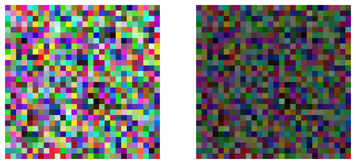
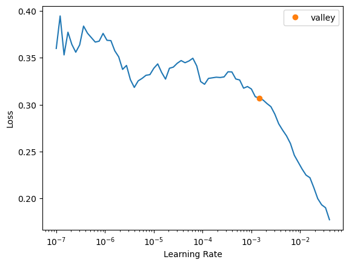

gdn = GDN(in_channels=3, out_channels=3)Basic PerceptNet
Defining base PerceptNet easy and quick.
GDN
Custom non-linear layer performing a somewhat-normalization of the input images taking into account local neighborhoods.
GDN
GDN (in_channels, out_channels, kernel_size=3, gamma_init=0.1, alpha_init=2, epsilon_init=0.5, alpha_trainable=False, epsilon_trainable=False, reparam_offset=3.814697265625e-06, beta_min=1e-06, apply_independently=False, kernel_initializer='identity', data_format='channels_first', **kwargs)
GDN custom layer.
| Type | Default | Details | |
|---|---|---|---|
| in_channels | Number of channels at input. | ||
| out_channels | Number of channels at output. | ||
| kernel_size | int | 3 | Kernel of the convolution. |
| gamma_init | float | 0.1 | Gamma parameter. |
| alpha_init | int | 2 | Initial value of alpha. |
| epsilon_init | float | 0.5 | Initial value of epsilon. |
| alpha_trainable | bool | False | Wether alpha is a trainable parameter. |
| epsilon_trainable | bool | False | Wether epsilon is a trainable parameter. |
| reparam_offset | float | 3.814697265625e-06 | Numerical stability trick. |
| beta_min | float | 1e-06 | Minimum value of beta. |
| apply_independently | bool | False | Wether to do grouped convolutions or not. |
| kernel_initializer | str | identity | Initialization of the convolution kernel. |
| data_format | str | channels_first | Format of the input data. |
| kwargs |
input_sample = torch.rand(size=(1,3,28,28))
output_sample = gdn(input_sample).detach()
assert input_sample.shape == output_sample.shape[W NNPACK.cpp:79] Could not initialize NNPACK! Reason: Unsupported hardware.fig, axes = plt.subplots(1,2, figsize=(9,4))
axes[0].imshow(input_sample.squeeze().permute(1,2,0))
axes[1].imshow(output_sample.squeeze().permute(1,2,0))
for ax in axes: ax.axis("off")
plt.show()
Model
Definition of the model.
PerceptNet
PerceptNet (in_channels)
Basic PerceptNet architecture.
| Details | |
|---|---|
| in_channels | Input channels. |
Loss function
The model is going to be trained to maximize the correlation between the distance in the transformed space and the MOS.
loss_perceptnet_fn
loss_perceptnet_fn (imgs, mos)
| Details | |
|---|---|
| imgs | Tuple of (ref_imgs, dist_imgs) in the transformed space. |
| mos | Real Mean Opinion Score |
Testing with FastAI
We want to train the model using
fastai, so we have to make sure that we can use it with the library.
import pandas as pd
from fastai.vision.all import *
from functools import partialdblock = DataBlock(blocks=(ImageBlock, ImageBlock, RegressionBlock),
getters=[ColReader(2, pref=path_ref),
ColReader(1, pref=path_dist),
ColReader(0)],
n_inp=2)df = pd.read_csv("../tid2008.csv", index_col=0)
df.head()| MOS | Dist | Ref | |
|---|---|---|---|
| 0 | 5.9706 | I01_01_1.bmp | I01.BMP |
| 1 | 5.4167 | I01_01_2.bmp | I01.BMP |
| 2 | 4.5556 | I01_01_3.bmp | I01.BMP |
| 3 | 4.3143 | I01_01_4.bmp | I01.BMP |
| 4 | 6.1429 | I01_02_1.bmp | I01.BMP |
dls = dblock.dataloaders(df, bs=32)learn = Learner(dls=dls,
model=PerceptNet(in_channels=3),
loss_func=loss_perceptnet_fn)lr = learn.lr_find()
lrSuggestedLRs(valley=0.0014454397605732083)